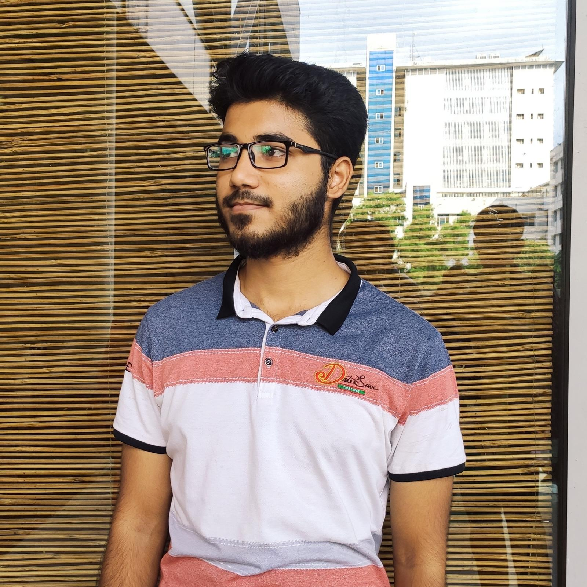

Pharmacology · Laboratory Sciences · Research
Third-year Pharmacology student at London Metropolitan University — combining rigorous laboratory science with hands-on research in microplastic analysis and molecular biology.

About Me
I am a third-year BSc Pharmacology student at London Metropolitan University, with a consistent record of A-grade module results and a deep passion for laboratory science. My academic journey has taken me from a perfect GPA in Bangladesh's science programmes to the forefront of microplastic research in London.
My practical expertise spans cell and molecular biology — including PCR, bacterial transformation, recombinant plasmid analysis, and agarose gel electrophoresis — alongside advanced analytical instrumentation such as FTIR spectroscopy, chromatography systems, and spectrophotometry.
Currently completing my final-year dissertation on microplastic characterisation in commercial chewing gum, I bring a meticulous, evidence-driven approach to every experiment. I work with strict adherence to GLP and health and safety standards, and I take pride in accurate record-keeping and reproducible methodology.
Beyond the lab, I am multilingual — fluent in English, Bengali, Urdu, and Hindi — and I thrive in both independent and team environments, as demonstrated by my concurrent role in a fast-paced customer-facing setting throughout my degree.
Expertise
A blend of hands-on molecular biology, advanced analytical instrumentation, and rigorous compliance — developed across three years of BSc study and professional laboratory work.
Education
Year 3 modules (all graded A): Toxicology · Systems Pharmacology · Systems Pathology
Year 2 modules (all graded A): Microbiology · Immunity · Spectroscopic Methods
A Level Science: GPA 5.00 / 5.00
O Level Science: GPA 5.00 / 5.00
Awarded a scholarship for outstanding academic performance at O Level.
Research
Experience
Languages
Fluent in four languages — a distinct advantage in diverse research, clinical, and industrial environments.
Curriculum Vitae
Preview the full CV below, or download a copy directly to your device.
The CV opens in a built-in viewer above. If it does not render, use the "Open in New Tab" or "Download PDF" buttons.
References
Available upon request. Two referees who can speak to both academic and professional capability.
Contact
Interested in discussing a laboratory technician role, research collaboration, or just want to learn more? Reach out directly or use the form below.
I am currently open to laboratory technician and research assistant positions in London and surrounding areas. I am available for immediate start and happy to discuss both full-time and part-time opportunities.
Send me a message directly via the form below. I'll aim to respond within 24 hours.
💡 To activate the contact form, replace the iframe src with your Google Form embed link. How to embed a Google Form →